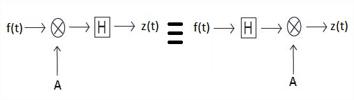
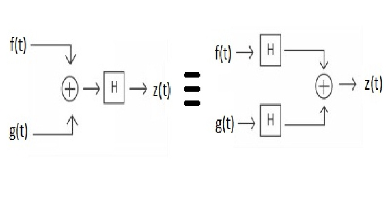
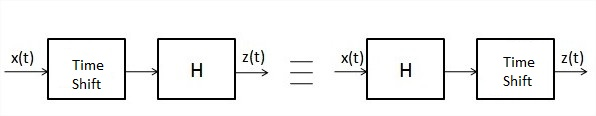
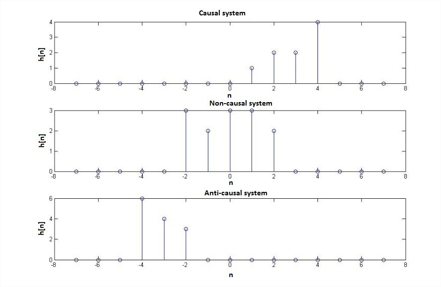

Shakshat Virtual Lab 
INDIAN INSTITUTE OF TECHNOLOGY GUWAHATI
Exp-2 System and their property


Theory
1. Linearity and Non-linearity property:.
2. Time-variant and Time-invariant property
3. Causal and Non-causal property.
Linearity and Non-linearity property :
A linear system is any system that obeys the superposition principle means if it satisfies the additivity and homogeneity property which is further described below. A nonlinear system is any system that does not have at least one of these properties.
Now if x(t) = H[f(t)] is the response of the system to an input f(t), 'A' is a constant
To show that a system H obeys the scaling or homogeneity property is to show that
 .............................................(1)
.............................................(1)

Fig.1(a) Homogeneity property of a system
If f(t) and g(t) are two distinct signals and x(t) = H[f(t)] and y(t) = H[g(t)]
To demonstrate that a system H obeys the additivity property is to show that
...................................... (2)

Fig. 1(b) Additivity property of a system
If f(t) and g(t) are two distinct signals and x(t) = H[f(t)] and y(t) = H[g(t)], 'A', 'B' are constants.
It is possible to check a system for linearity in a single (though larger) step. To do this, simply combine the two steps to get
...................................................(3)
Now, if we have a setup where the linear combination of two inputs f(t) and g(t) with gains 'A' and 'B' respectively can be provided to a system and if we can now linearly combine the responses x(t) of f(t) and y(t) of g(t) with gain factors 'C' and 'D' respectively and compare the two waveforms, we can test the linearity or non linearity of a system by matching the gains A = C and B = D. If the two waveforms match when A = C and B = D, the system is linear, otherwise it is not. Figure 1(a) and 1(b) shows the homogeneity and additivity property of a system respectively.
Time-variant and Time invariant property:
A system is said to be time invariant if the response of the system to an input is not a function of time. On the other hand a system is time variant if the response to an input alters with time i.e. the system has varying response to the same input at different instants of time.
One consequence of time variance or time invariance property is that a shifted input will produce a same amount of shift in the output response in a linear time invariant system for any given shift, whereas a time varying system will produce a response which does not match with the shifted version of the original unshifted response shifted by same amount.
The following block diagram in Figure 2 shows the time-invariance property of a system.

Fig.2 Time-invariance property of a system
One test to verify time invariance/variance property of a system is to shift the response of the system to an input signal and apply a shifted input, to the same system and compare the two waveforms, so obtained. If the system is time invariant, the two waveforms will match when the input and output shifts match. If time variant, the waveforms will not match.
Causality and Noncausality property:
A causal system is a system in which the output depends only on current or past inputs, but not on future inputs. Similarly, an anti-causal system is a system in which the output depends only on current or future inputs, but not past inputs. Finally, a non-causal system is a system in which the output depends on both past and future inputs.
The following figure shows impulse responses of discrete-time linear time invariant causal, non-causal and anti-causal systems.

Fig. 3 Impulse response of causal, non-causal and anti-causal system
Real time systems in which time is the independent variable must always be causal because no system can depend on a future input value. Non-causality can however exist in domains such as image processing where independent variable is the pixel position.
A non-causal or anti-causal system can be converted to a causal system by introducing appropriate delay in the system.